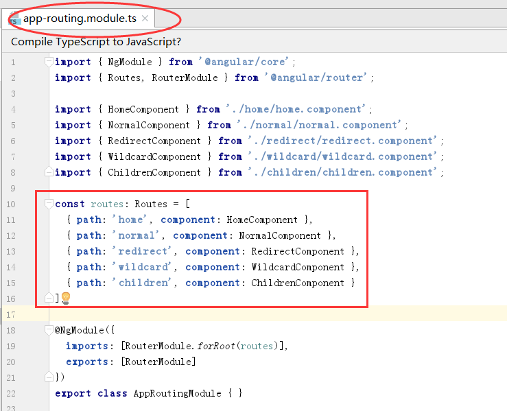
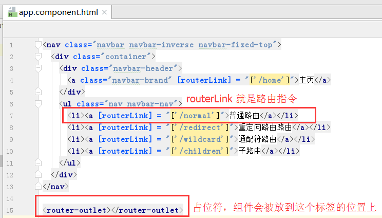

在Web 开发中，路由的概念由来已久，简而言之，就是利用URL的唯一性来指定特定的事物，这个事物可以是文件、状态、数据，等等。 服务器端路由早已有之，随着近几年REST理念的流行，为更多的人接受和使用。而浏览器客户端路由，则是随着单页应用 (SPA)的兴起，才被越来越多的前端框架所实现。在Angular中，页面由组件构成，因此URL和页面的对应关系实质上就是URL和组件的对应关系
上面那些天书换种简单的说法就是：浏览器中地址栏地址变化，页面内容也跟着相应变化。这种操作就叫做路由。
延伸阅读：URL和URI的区别 restFul架构风格根路由在 app-routing.module.ts 中进行配置。类似：{{ "{ path: 'home', component: HomeComponent }" }}
指令的作用是相当于 a 标签，点击它才会跳转相应的页面。
占位符在上图中已经标明，作用是先占个位置，点击指令的之后，会在路由配置项中找到相应的组件，组件的内容就放到这个占位符的位置这里。
如果路由跳转时需要携带一些参数，在这一步操作。